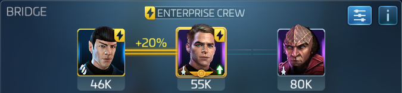

Eclipse Armadas
The trick to surviving eclipse armadas is shield regen and hull breach. The only officers that regen shields are Kelvin timeline Kirk and Spock when paired, or TNG Crew Beverly (the rare one). Don't worry about burning for Eclipse.
Running Kirk and Spock
Sisko Kirk Spock
At Tier 5 Spock regens 750% of crew defense to shields when morale is active. At Tier 4 it's 400% and Tier 3 drops all the way down to 100%, less than beverly's captain maneuver with no synergy. Tier 3 spock and lower, run Beverly as captain instead.

Sisko/Kirk/Spock is the most foolproof crew you can run in EC armadas. If your mitigation research is lacking, sisko will bring you to mitigation cap and still stack crit.
Other Kirk Spock crews
If you don't have Sisko but do have good Outlaw mitigation research, Kirk Spock Khan is a good option.

If you don't have Sisko and you're not reaching the mitigation cap, zhou or bev in the third officer slot will keep you alive. Choose whichever has the higher value of defense to mitigation.
Definitely bring one Stella running hull breach. Hull breach is an additional 50% crit damage calculated after all the bonuses from your officers and research, so it's a huge deal in eclipse armadas because there's so much critical damage research in the Outlaw research tree.
Beverly as Captain
This is the same shield regen as tier 4 spock with the added benefit of mitigation from beverly and worf. Yarr is just there for synergy. use this if your Spock is below tier four
Similar to above, you lose 25% of your shield regen and gain crit from Khan.
This crew brings crit and hullbreach, but doesn't regen nearly as much shields as Kirk/Spock Morale. You can compensate by piling your highest health officers below deck along with Hemmer. If your shield breaks running this crew, switch to morale.